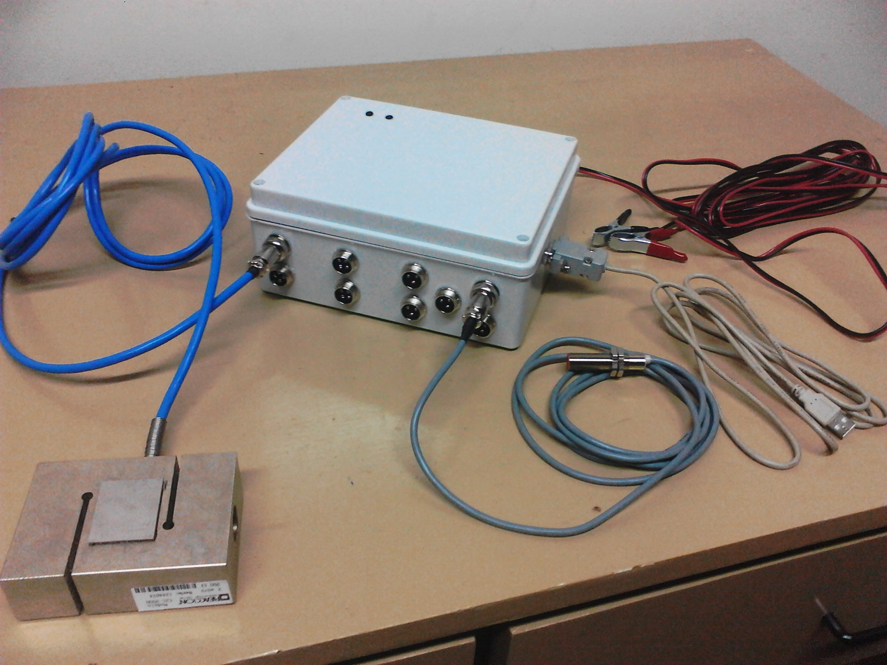
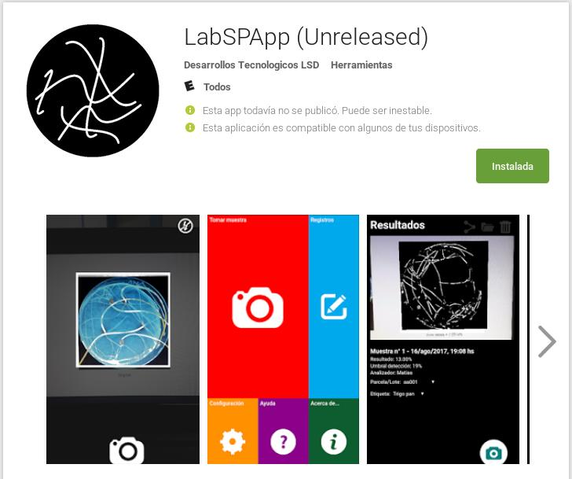
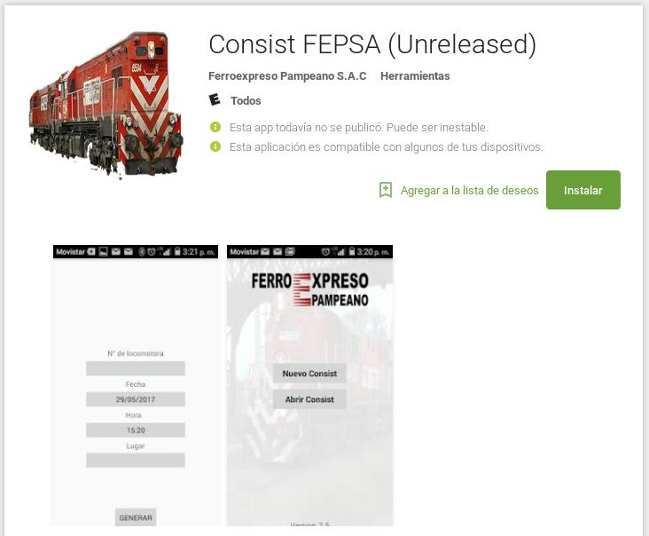

Desarrollos Tecnológicos LSD es un equipo de trabajo conformado por docentes, alumnos e investigadores del Laboratorio de Sistemas Digitales, dentro del Departamento de Ingeniería Eléctrica y Computadoras de la Universidad Nacional del Sur, con el objetivo de asesorar y colaborar con el sector socio productivo de Bahía Blanca y su zona en el desarrollo de nuevas tecnologías. Nuestros temas de interés abarcan desde los sistemas embebidos, pasando por el desarrollo de aplicaciones para dispositivos móviles y el procesamiento y análisis de la información.
En este trabajo se desarrolló un sistema electrónico para medir y registrar los datos obtenidos de celdas de carga y sensores inductivos a fines de generar la información requerida para realizar posteriores análisis de la eficiencia de la maquinaria agrícola sometida a pruebas de rendimiento. Además se detallan los aspectos principales del proceso de desarrollo, diseño de hardware y software, cuestiones de implementación y resultados experimentales obtenidos en las pruebas de laboratorio. Más info...
LabSPApp permite analizar imágenes de suelos y muestras de laboratorio mediante procesamiento digital de las fotografías capturadas con la cámara del smartphone. La principal herramienta permite calcular porcentajes de cobertura vegetal de suelos y discriminar entre materia vegetal viva o muerta. Por otro lado, es posible estimar el desarrollo radicular de plantas en estadíos de germinación. Más info...
Esta aplicación permite crear un consist con los vagones que integran la formacion de un tren e informarla via mail al centro de control. A lo largo de la vida del tren puede modificarse, actualizarse y enviarse nuevamente. Más info...

Departamento de Ingeniería Eléctrica y Computadoras
Universidad Nacional del Sur
Avda. San Andrés 800 - IIIE/DIEC
B8000CPB Bahía Blanca, Buenos Aires, Argentina.
Tel: 00 54 0291 459 5181
Fax: 0054 0291 459 5154
e-mail: des.tec.lsd@gmail.com